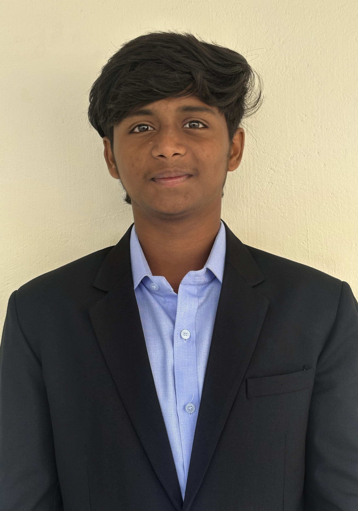

VIGENSH S
Kalaignarkarunanidhi Institute of Technology
Coimbatore-641402
Summary:
- Aspiring Software Developer | CSE Student | Problem Solving
- I'm Vignesh, currently pursuing a Bachelor's degree in Computer Science Engineering at Kalaignarkarunanidhi Institute of Technology, Coimbatore (Graduating 2027). I’m passionate about building real-world solutions through code and constantly expanding my tech skills.
Skills:
- Communication,
- Python,C,C++,Java Praogramming Language,
- Critical Thinking
- Teamwork
Certificates:
- SB_TechA Modern HTML and CSS Certification (Infosys Springboard)-2024
- Basics of Python Certification (Infosys Springboard).
- Python Foundation Certification (Infosys Springboard).
- Java Foundation Certification (Infosys Springboard)-2024
- Introduction to the Fundamental of Databases (Simple learn)
Project:
Safety prevention project
- This project focuses primarily on accident prevention during nighttime